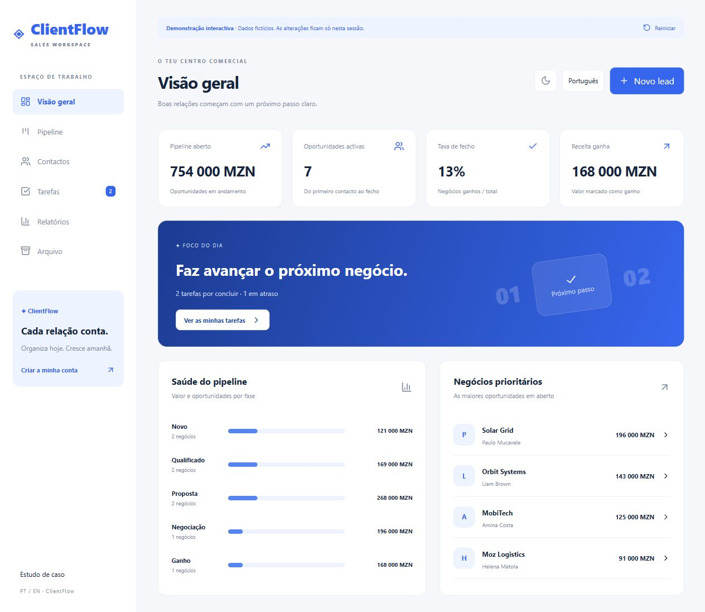

Mobile development
Android applications built with Kotlin and Android Studio, from interface design to cloud integration and Play Store delivery.
Junior Full Stack Developer · Pharmacy Technician · Final-year Accounting and Auditing Student
Junior Full Stack Developer, Pharmacy Technician and final-year Accounting and Auditing student, based in Maputo. I build responsive web applications with React, TypeScript and PostgreSQL, alongside Android apps with Kotlin and Firebase.
CVs updated for Junior Full Stack opportunities · English and Portuguese

01 / About
My development experience comes from independent projects: a full-stack CRM with authentication and a database, bilingual web interfaces, and two Android apps published on Google Play. I work across the interface, server operations and data layer, with a focus on clear user flows and validation.
Since June 2019, I have worked in pharmacy operations and I currently collaborate in medicines research at Mozambique's National Institute of Health. I am completing a degree in Accounting and Auditing. This background brings discipline with information, confidentiality and practical understanding of users to my development work.
02 / Skills
Android applications built with Kotlin and Android Studio, from interface design to cloud integration and Play Store delivery.
Authentication, storage and connected app experiences using Firebase and services from the Google Cloud ecosystem.
React and TypeScript interfaces, Wasp / Node.js server operations, and Prisma / PostgreSQL persistence. Applied in ClientFlow with authentication, account isolation and automated tests.
Customer support, documentation, stock control, research, accounting fundamentals and structured office workflows.
03 / Projects
Full-stack development, published Android apps and bilingual web experiences. Explore the demos, implementation decisions and source code.

An interactive bilingual CRM with lead editing, sales pipeline, tasks, reports and CSV export. Full SaaS source includes authentication and PostgreSQL persistence.
Photo → personality
An Android app that turns a photo into playful roasts, compliments and ready-to-share social captions using AI.
A mobile workflow for scanning documents, translating their content and exporting the final result to PDF or Word.
A product concept designed to make calorie calculations and everyday nutrition tracking simple and clear.
A responsive healthcare appointment experience with doctor discovery and a clear booking flow.
A modern online store experience with product discovery, categories and a bilingual shopping interface.
A clean fintech dashboard concept for tracking balances, expenses and financial goals.
04 / Experience
National Institute of Health
Support medicines-related research activities, organise structured information and handle research documentation carefully.
Farmácia Nossa Casa II
Guide customers and patients, organise medicines, monitor stock and expiry dates, and maintain accurate, confidential records. Coordinate requests with colleagues to support daily service.
Supervised customer service, product organisation and pharmacy tasks at Farmácia Nossa Casa, Laulane, Maputo.
Practical placements in hospitals, provincial medical stores and health centres in Tete and Chimoio.
Warehouse supervision, public works assistance and retail support. A practical foundation in coordination and customer service.
Higher Education
Final year, in progress. Developing analytical, financial and organisational skills alongside my development projects.
Institute of Health Sciences of Chimoio
Graduated as the best student in Pharmacy VII after clinical placements.
Nhamatanda General Secondary School · Completed 2014
Languages
05 / Training
Cursa · Completed 28 September 2026 · 1 h 44 min
Cursa · May–June 2026 · 16 h 01 min · AI, machine learning and optimisation
WAKE UP Desenvolvimento de Talentos · 2023
Centro de Cópias & Informática · 2014
06 / Contact
Available for remote Junior Full Stack Developer roles, junior Android opportunities and freelance projects. Based in Maputo and open to international collaboration.
Franciscobene0@gmail.com